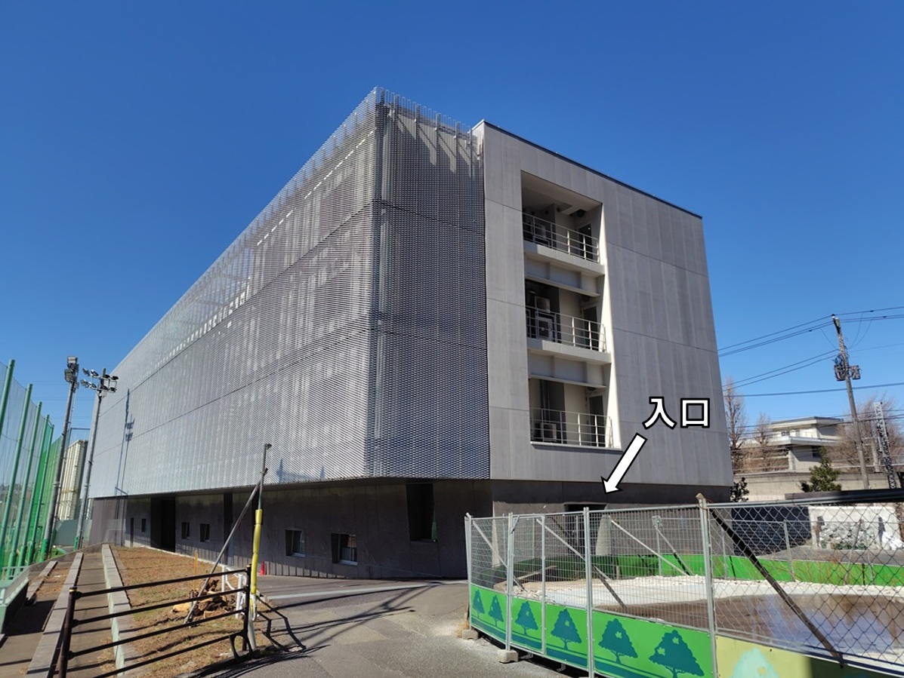
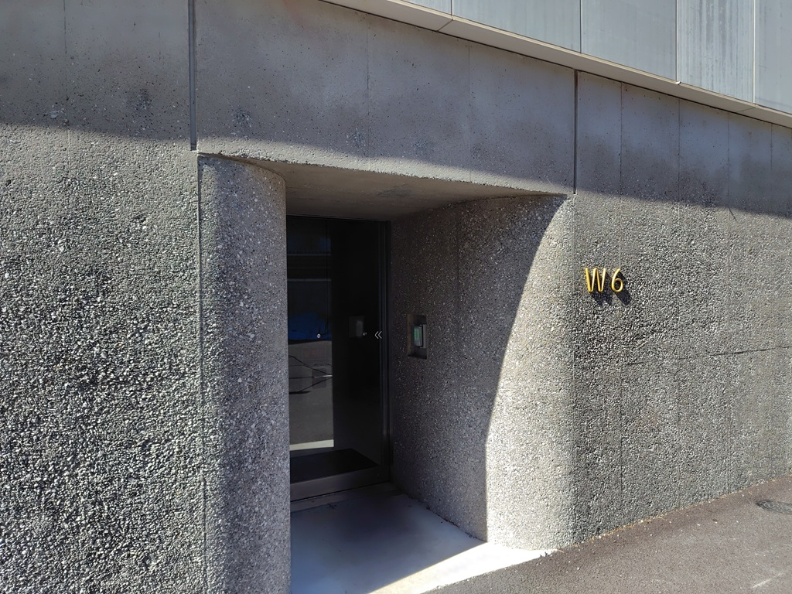

連絡先
新連絡先・所在地
研究室の所在地は大岡山キャンパス西6号館4階411号室（瀬尾）および407号室（他スタッフ，学生）です．
奥まった場所にあり建物と入口の場所がわかりにくいかもしれません．ご迷惑をおかけいたしますが，ご注意お願いいたします．
住所：〒152-8552 東京都目黒区大岡山2-12-1-W6-10 東京科学大学 西6号館411号室 瀬尾研究室
メールアドレス：seo.t.aa{at}m.titech.ac.jp
地図：下図のW6

